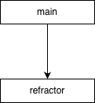

Варінт 6
Мета:
Сформувати декларативне мислення в галузі програмування завдяки застосуванню принципів функціонального програмування. Опанувати техніку застосування рекурсивних функцій для обчислювальних процесів і здійснити дослідження ефективності рекурсивних процесів.
Умова:
1. З n солдатів, вишикуваних в шеренгу, потрібно відібрати кількох в розвідку. Для здійснення цього виконується наступна операція: якщо солдат в шерензі більше ніж 3, то видаляються всі солдати, які стоять на парних позиціях, або всі солдати, які стоять на непарних позиціях. Ця процедура повторюється до тих пір, поки в шерензі залишиться 3 або менше солдатів. Їх і відсилають в розвідку. Обчислити кількість способів, якими можуть бути сформовані групи розвідників рівно з трьох осіб. Кількість солдатів n вводиться з клавіатури. Рекурентне співвідношення для обчислення кількості способів f(n), якими можна сформувати групи розвідників з n осіб в шерензі, таке:
2. Ввести з клавіатури натуральне число n. Використовуючи один із типів рекурсії (звичайна або хвостова рекурсія), вивести всі його цифри по одній в прямому порядку, розділяючи їх пробілами або новими рядками. Обґрунтувати вибір типу рекурсивного процесу. При розв'язанні цього дозволена тільки рекурсія і цілочисельна арифметика. Контрольний тест: введено число 123, отриманий результат: 1 2 3.
Аналіз:
1.
2. У задачі найзручніше використати звичайну (нерозгалужену) рекурсію, оскільки для виведення цифр у прямому порядку потрібно спочатку «дійти» до найстаршої цифри, а вже потім друкувати їх у порядку повернення з рекурсії. Це природно реалізується, якщо рекурсивно викликати функцію для n // 10, поки число не стане однозначним, а після повернення — друкувати n % 10. Хвостова рекурсія тут менш придатна, бо вимагає накопичення або інверсії порядку, що суперечить умовам «лише рекурсія і цілочисельна арифметика». Тому звичайна рекурсія дає найчистіший, найприродніший алгоритм.
Блок-схема:
2. 
Код лабораторної работи:
2.
Прикради виконання:
2.
Первірка розрахунків:
1.
2. Правильність віконання є самоочевідною
Аналіз коду методами штучного інтелекту:
2. Функція refractor реалізує класичну пряму рекурсію, яка послідовно ділить число на 10, переходячи до найстаршої цифри (базовий випадок: (< n 10)), і у фазі повернення з рекурсії друкує кожну наступну цифру. Таким чином реалізується природний для задачі механізм "відкладеного друку", що забезпечує правильний порядок виведення — зліва направо. Код використовує лише цілочисельну арифметику (quotient, modulo) відповідно до вимог, а також не створює зайвих структур, тому логічний, чистий і легко перевіряється. Рекурсивний процес добре структурований і повністю відповідає суті нерухомої рекурсії (non-tail recursion), що є найбільш адекватним вибором для цієї задачі.
Висновок:
Menu